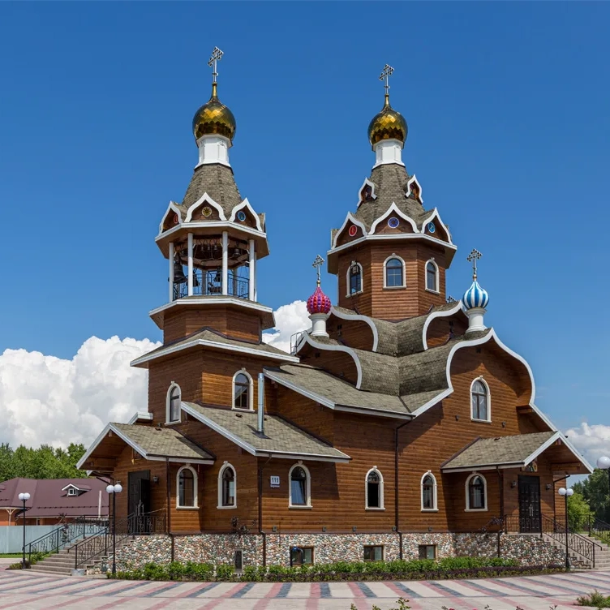

10 октября 2026 г.
О храмеБожественная литургия
Приход в честь Богоявления Господня

Бердск
Место строительства деревянного Богоявленского храма было освящено в 2014 году. Храм появился в бердском микрорайоне рядом с родильным домом. В епархиальном сообщении 2017 года его освящение было назначено на 1 апреля. Архитектурный каталог фиксирует первое богослужение и освящение в этот день.
Храм построен в деревянных архитектурных формах с шатровым завершением. В каталоге названы архитекторы И. З. Репюк и А. Исаев.
Приходское расписание: оригинал
Расписание подтверждено по 11 октября 2026 года.
Приход в честь Богоявления Господня
Приход в честь Богоявления Господня
Приход в честь Богоявления Господня, Бердск, ул. Боровая, 111
В расписании указано после литургии, начинающейся в 08:00; время Крещения уточняется.
Приход в честь Богоявления Господня
Приход в честь Богоявления Господня, Бердск, ул. Боровая, 111
В расписании указано после литургии, начинающейся в 08:00; время Крещения уточняется.
Воскресная школа упоминается в приходских новостях 2024 года. Набор, возрастные группы и расписание занятий нужно уточнить в приходе.
По расписанию совершается молебен о здравии в ЦАД «Святитель Лука». На 10 и 11 октября указано Таинство Крещения после литургии; точное время уточняйте в храме.
Новости прихода можно найти в общей ленте.